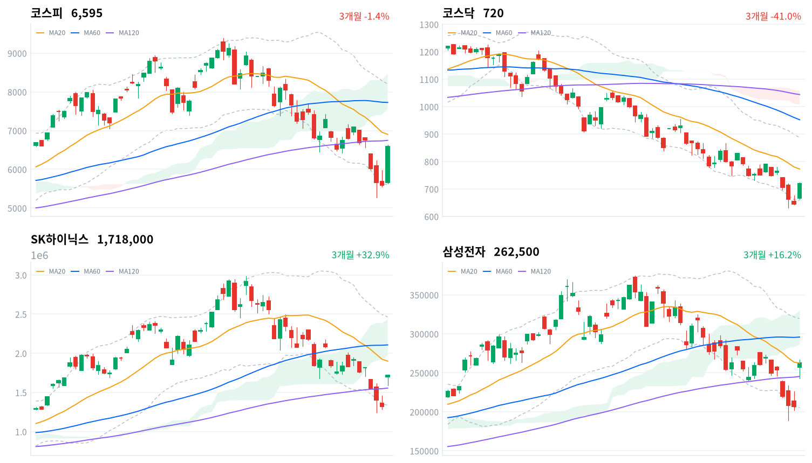

코스피가 전 거래일 대비 17.91% 폭등한 6,595.45로, 코스닥은 11.63% 오른 719.76으로 마감했다. 개장 초 코스피200 선물 급등에 매수 사이드카가 발동됐고 외국인이 코스피에서 역대급 규모(+7조2,410억원, 당일 잠정)를 순매수하며 지수를 밀어올렸다. 반도체와반도체장비 업종이 +28.03%(폭넓은 상승 주도)로 시장을 이끌었고, SK하이닉스·삼성전자가 나란히 사상 최대 일간 상승률을 기록했다.
동인미국 빅테크 실적발 AI 설비투자 기대가 이날 급등의 근본 동인이다. 메타가 연간 CAPEX 가이던스 하단을 1,250억달러에서 1,300억달러로 올리고 알파벳도 1,800억~1,900억달러에서 1,950억~2,050억달러로 상향한 소식이 반도체·메모리 수요 지속 기대를 되살렸다(파이낸셜뉴스, 서울경제, 뉴스핌). 이 재료가 개장 직후 코스피200 선물 급등과 매수 사이드카 발동으로 이어졌고, 외국인이 코스피에서 +7조2,410억원(당일 잠정)이라는 역대급 규모를 순매수하며 지수를 끌어올렸다. SK하이닉스(+29.95%, 2009년 이후 첫 상한가급 상승)와 삼성전자(+26.81%, 사상 최대 일간 상승률)가 직접 동력이 됐고, 반도체와반도체장비 업종은 등락률 +28.03%에 breadth 0.971(폭넓은 상승 주도)로 개별 종목 쏠림이 아닌 업종 전반의 강세임이 확인된다.
정합성외국인 순매수(+7조2,410억원)와 프로그램 비차익 순매수(+5조1,036억원)의 방향이 일치해 이번 급등이 선물 재정거래가 아니라 실질적인 현물 매수 유입에 근거했음을 보여준다. 반면 차익거래는 -8,127억원 순매도로, 선물 저평가·고평가 해소 과정의 기계적 물량일 뿐 지수 상승을 방해하지 않았다. 개인은 -8조2,840억원 순매도로 이날 급등에 차익실현으로 대응했고, 이 와중에 원/달러 환율은 13.4원 내린 1,424.0원, 국고채 3년물은 -7.3bp, 10년물은 -5.0bp로 나란히 하락해 외국인 자금 유입에 따른 원화 강세·채권 강세가 위험선호 회복과 동시에 나타났다 — 수급·가격·크로스에셋 신호가 서로 어긋나지 않고 한 방향으로 맞물린 그림이다.
확인 트리거다만 코스피는 여전히 20일선(6,903.02, -4.46% 이격)과 구름대 하단(7,557.91)을 밑돌고 있어, 오늘의 급등이 추세 전환으로 이어지려면 우선 20일선 회복 여부를 지켜봐야 한다. 이를 넘어서면 구름대(7,557.91~8,476.20) 진입 시도가 다음 관문이고, 실패해 전환선(6,214.39)마저 다시 이탈하면 되돌림 위험이 커진다. 코스닥도 역배열 구조(20일선 772.91 아래)를 벗어나지 못했다는 점, 정책 측면에서는 8월 27일 한은 금통위와 9월 18일 반도체특별법 시행이 다음 분기점이라는 점을 함께 확인 지점으로 삼는다.
| 지수 | 종가 | 등락률 |
|---|---|---|
| 코스피 | 6,595.45 | +17.91% |
| 코스닥 | 719.76 | +11.63% |
코스닥은 일중 고가·저가 데이터가 제공되지 않아 종가·등락률만 표기했다.
코스피는 전일 종가 5,593.56 대비 5,657.79로 갭 상승 출발했고, 첫 30분봉 종가는 5,650.03으로 보합권에 머물렀으나 09시30분 6,407.24까지 단숨에 튀어 오르며 코스피200 선물 5%대 급등에 따른 매수 사이드카를 촉발했다. 이후 오전 중반에는 6,370~6,490 구간에서 등락을 반복하며 숨을 고르는 흐름이 이어졌다.
오후 들어 재차 매수세가 유입되며 13시 6,370.82에서 14시30분 무렵 30분봉 종가 기준 6,610.11(일중 고가 6,630.77)까지 밀어올렸고, 이후 소폭 되밀리며 15시30분 6,595.44, 최종 6,595.45로 마감했다. 일중 저가는 5,629.76으로 개장 직후 형성됐다.

코스피·코스닥·SK하이닉스·삼성전자 3개월 일봉 캔들에 20·60·120일 이동평균, 볼린저밴드(점선), 일목균형표 구름대(음영)를 오버레이했다. 상승은 녹색, 하락은 적색 캔들로 표시된다.
코스피는 6,595.45로 마감해 20일선(6,903.02, -4.46% 이격)과 60일선(7,726.85, -14.64%)을 밑돌지만 120일선(6,747.86, -2.26%)과는 격차가 좁아 이동평균선 배열이 혼조 상태다. 일목균형표상 전환선(6,214.39)이 기준선(7,153.41) 아래에 있고 가격도 구름대 하단(7,557.91) 밑에 위치해 추세 회복이 완전히 확인된 국면은 아니며, 볼린저밴드 %b는 0.382로 중심선과 하단 사이에 걸쳐 있어 과열 신호는 아니다.
상승 시나리오는 120일선(6,747.86)과 20일선(6,903.02) 회복이 1차 확인 지점이며, 이를 넘어서면 기준선(7,153.41)→구름대 하단(7,557.91)→60일선(7,726.85)→볼린저 상단(8,203.87)→20일 스윙 고점(8,327.26)→구름대 상단(8,476.20)을 거쳐 60일 스윙 고점(9,385.59)까지 저항이 이어진다. 하락 시에는 전환선(6,214.39) 이탈→볼린저 하단(5,602.18)→20·60일 스윙 저점(5,262.77)이 최후 지지선 순서다.
코스닥은 719.76으로 마감해 20일선(772.91, -6.88%)·60일선(952.36, -24.42%)·120일선(1,044.05, -31.06%)을 모두 밑돌며 단기선이 장기선 아래 놓인 역배열 구조를 유지한다. 전환선(710.64)은 근소하게 웃돌지만 기준선(793.22)과 구름대(1,007.94~1,057.80)는 훨씬 위에 있어 추세 전환 확인까지는 거리가 있고, 볼린저 %b는 0.268로 코스피보다 반등 탄력이 약한 편이다.
상승 트리거는 20일선(772.91) 회복이며, 이후 기준선(793.22)→20일 스윙 고점(875.39)→볼린저 상단(887.29)→60일선(952.36)→구름대 하단(1,007.94)→120일선(1,044.05)→구름대 상단(1,057.80)까지 저항이 겹겹이 남아 있고 최종 목표는 60일 스윙 고점(1,225.29)이다. 하락 시에는 전환선(710.64) 이탈→볼린저 하단(658.53)→20·60일 스윙 저점(630.99)이 최후 지지선이다.
SK하이닉스는 1,718,000원으로 마감해 20일선(1,900,400원, -9.6%)과 60일선(2,107,050원, -18.46%)은 밑돌지만 120일선(1,555,700원)은 10.43% 웃돌아 이동평균선이 뒤섞인 혼조 배열이다. 전환선(1,626,000원)은 웃돌았으나 기준선(2,116,500원)과 구름대(1,967,500원~2,432,500원) 아래에 머물러 있어 상승 폭발에도 중장기 추세 신호는 완전히 돌아서지 않았고, 볼린저 %b는 0.338로 중심선 아래쪽에 위치한다.
상승 시나리오는 20일선(1,900,400원) 회복을 기점으로 구름대 하단(1,967,500원)→60일선(2,107,050원)→기준선(2,116,500원)→구름대 상단(2,432,500원)→볼린저 상단(2,463,751.54원)→20일 스윙 고점(2,497,000원)을 거쳐 60일 스윙 고점(2,987,000원)까지 저항이 이어진다. 하락 시에는 전환선(1,626,000원) 이탈→120일선(1,555,700원)→볼린저 하단(1,337,048.46원)→20·60일 스윙 저점(1,246,000원)이 최후 지지선이다.
삼성전자는 262,500원으로 마감해 20일선(262,550원)과는 사실상 같은 자리(-0.02%)에 있고 120일선(245,373.75원)은 6.98% 웃돌지만 60일선(295,883.33원)은 11.28% 밑돌아 혼조 배열이다. 기준선(275,850원)과 구름대(286,350원~330,250원)는 여전히 위쪽에 있어 가격이 구름대 아래에 머무는 국면이며, 볼린저 %b는 정확히 0.5로 중심선에 걸쳐 있다.
상승 트리거는 20일선(262,550원) 안착 이후 기준선(275,850원)→구름대 하단(286,350원)→60일선(295,883.33원)→볼린저 상단(319,560.44원)→20일 스윙 고점(325,000원)→구름대 상단(330,250원)을 거쳐 60일 스윙 고점(374,500원)까지 열려 있다. 하락 시에는 120일선(245,373.75원)→전환선(232,600원)→볼린저 하단(205,539.56원)→20·60일 스윙 저점(189,200원)이 최후 지지선 순으로 짚인다.
위 레벨은 모두 이동평균·볼린저밴드·일목균형표·스윙 고저의 기계적 계산값이며 투자 권유가 아니다.
코스피·코스닥 수급은 2026-07-31 당일 잠정치다(장 마감 직후 집계로 확정 전 수치, kr_flows.json label). 외국인이 코스피에서 +7조2,410억원을 순매수해 연중 최대급 규모를 기록했고, 개인은 -8조2,840억원 순매도로 차익실현에 나섰다. 기관은 +1조1,503억원으로 소폭 매수 우위를 보였다.
| 시장 | 개인 | 외국인 | 기관 |
|---|---|---|---|
| 코스피 (당일 잠정) | -82,840억원 | +72,410억원 | +11,503억원 |
| 코스닥 (당일 잠정) | -4,715억원 | +1,697억원 | +2,985억원 |
단위 억원. kr_flows.json 기준 2026-07-31 당일 잠정치(label: 당일 잠정치, stale: false).
외국인·기관이 코스피·코스닥 양 시장에서 나란히 순매수 우위를 보인 점은 오늘 지수 급등 방향과 정합적이다. 개인이 대규모로 매도한 것은 급등에 따른 차익실현 성격으로 읽히며, 외국인 자금이 개인 매도 물량을 그대로 받아낸 구도가 이날 지수 상승을 지탱했다.
| 시장 | 차익 순매수 | 비차익 순매수 | 전체 순매수 |
|---|---|---|---|
| 코스피 (당일 잠정) | -8,127억원 | +51,036억원 | +42,909억원 |
| 코스닥 (당일 잠정) | +23억원 | +2,576억원 | +2,599억원 |
단위 억원. kr_program.json 2026-07-31 당일 잠정치(row[0]).
코스피 비차익 순매수(+5조1,036억원)는 방향성 바스켓 매수로, 외국인의 현물 순매수(+7조2,410억원)와 같은 방향을 가리켜 이번 급등이 기관·외국인의 실수요 매수에 기반했음을 뒷받침한다. 반면 차익거래는 -8,127억원 순매도인데, 이는 선물 베이시스 축소 과정에서 나온 기계적 물량으로 방향성 매수와는 성격이 다르다 — 차익·비차익을 분리해 보면 이날 상승은 선물 주도가 아니라 현물 수급 주도였다는 판단을 강화한다.
코스닥은 차익 규모 자체가 작아(+23억원) 비차익 순매수(+2,576억원)가 사실상 전체 프로그램 흐름을 대변하며, 이 역시 외국인·기관 순매수 방향과 어긋나지 않는다.
| 종목/ETF | 구분 | 거래대금(백만원) | 조 환산 |
|---|---|---|---|
| SK하이닉스 | 종목 | 17,287,902 | 17.29조원 |
| 삼성전자 | 종목 | 14,769,098 | 14.77조원 |
| SK하이닉스 레버리지 | 레버리지(롱) | 1,672,301 | 1.67조원 |
| 삼성전자우 | 종목(우선주) | 1,598,505 | 1.60조원 |
| 삼성전자 레버리지 | 레버리지(롱) | 732,668 | 0.73조원 |
| SK하이닉스 인버스 | 인버스(숏) | 565,348 | 0.57조원 |
| TIGER 반도체TOP10 | 업종테마ETF | 479,351 | 0.48조원 |
| 한미반도체 | 종목 | 451,404 | 0.45조원 |
| SK이터닉스 | 종목 | 427,026 | 0.43조원 |
| SOL AI반도체TOP2플러스 | 업종테마ETF | 379,195 | 0.38조원 |
같은 기초자산 ETF를 방향별로 묶고 지수·해외 ETF 제외. 코스피200·코스닥150 추종 및 그 레버리지·인버스는 정규화 단계에서 제외돼 표에 없다.
SK하이닉스 레버리지 거래대금(1조6,723억원)이 인버스(5,653억원)의 약 3배에 달해 개인 투자자들의 상승 베팅이 하락 베팅을 압도했음을 보여준다. SK하이닉스·삼성전자 본주 거래대금(각각 17.29조원, 14.77조원)이 압도적 1·2위를 차지했고, TIGER 반도체TOP10·SOL AI반도체TOP2플러스 같은 업종테마 ETF에도 자금이 몰려 반도체 쏠림이 개별 종목을 넘어 ETF 자금까지 확산됐음을 시사한다.
위 섹터 멀티기간 막대는 별도 브로커 섹터 분류 기준(1D~1Y)이며, 아래 업종 표는 GICS 유사 업종 분류의 breadth(상승 종목 비율) 크로스체크다.
| 업종 | 등락률 | breadth | 판정 |
|---|---|---|---|
| 반도체와반도체장비 | +28.03% | 97.1% | 폭넓은 상승 주도 |
| 전자장비와기기 | +26.79% | 93.4% | 폭넓은 상승 주도 |
| 전기장비 | +21.18% | 94.3% | 폭넓은 상승 주도 |
| 복합기업 | +16.75% | 90.9% | 폭넓은 상승 주도 |
| 생명보험 | +16.69% | 100.0% | 폭넓은 상승 주도 |
| 통신장비 | +15.13% | 83.6% | 좁은 상승·개별종목 |
| 에너지장비및서비스 | +11.91% | 85.3% | 좁은 상승·개별종목 |
| 디스플레이장비및부품 | +11.67% | 86.1% | 폭넓은 상승 주도 |
| 기계 | +10.81% | 90.4% | 폭넓은 상승 주도 |
| 핸드셋 | +10.58% | 93.0% | 폭넓은 상승 주도 |
단위 %. kr_industry.json. breadth는 업종 내 상승 종목 비율.
반도체와반도체장비(+28.03%, breadth 97.1%)와 전자장비와기기(+26.79%, breadth 93.4%)는 등락률과 breadth가 모두 최상위권으로 소수 대형주가 아니라 업종 전체가 함께 오른 폭넓은 주도임이 확인된다. 반면 통신장비(+15.13%, breadth 83.6%)와 에너지장비및서비스(+11.91%, breadth 85.3%)는 등락률만 보면 상위권이지만 breadth가 상대적으로 낮아 일부 개별 종목이 등락률을 견인한 좁은 상승으로 구분해야 한다 — 상승률 상위라는 이유만으로 업종 전체가 주도했다고 단정할 수 없다.
SK하이닉스는 전일 대비 29.95% 오르며 사실상 상한가에 도달했다(한국경제, 뉴스1). 코스피 가격제한폭이 ±30%로 확대된 2015년 이후, 그리고 2009년 1월 이후 처음 있는 상한가급 상승으로, 외국인 대량 매수가 직접 동력이 됐다. 거래대금도 17.29조원으로 이날 시장 전체 1위를 차지했다.
삼성전자는 26.81% 급등해 사상 최대 일간 상승률을 기록했고 거래대금 14.77조원으로 2위에 올랐다(머니투데이). 삼성전기는 전일 발표한 2분기 실적이 시장 전망치를 웃돌며 저점 매수가 유입돼 상한가(+29.92%)를 기록했고, SK스퀘어는 미국 반도체 훈풍에 최태원 SK그룹 회장의 SK하이닉스 장내 매수 소식이 겹치며 역시 상한가(+29.9%)로 마감했다(뉴스핌, 머니투데이).
한미반도체는 거래대금 4,514억원으로 상위권에 이름을 올리며 반도체 장비주로서 업종 전반의 동반 강세 수혜를 받았다. 다만 일부 증권가는 SK하이닉스가 상한가를 기록한 이날에도 목표주가를 낮춰 잡는 등 단기 급등에 대한 밸류에이션 부담을 지적하는 신중론도 병존한다(파이낸셜뉴스).
원/달러 환율은 전일 대비 13.4원 내린 1,424.0원으로 마감한 것으로 보도된다(머니투데이). 외국인의 대규모 코스피 순매수(+7조2,410억원, 당일 잠정)에 따른 달러 공급 확대가 원화 강세의 배경으로 지목된다.
| 지표 | 금리 | 전일比(bp) | 기준일 |
|---|---|---|---|
| 국고채 3년 | 3.758% | -7.3bp | 2026-07-31 |
| 국고채 10년 | 4.261% | -5.0bp | 2026-07-31 |
| CD 91일 | 2.95% | +2.0bp | 2026-07-31 |
| 회사채 AA- 3년 | 4.478% | -6.3bp | 2026-07-31 |
| 한국은행 기준금리 | 2.50% | 0.0bp | 2026-06 기준(월간 지표) |
단위 연%. ECOS(한국은행 경제통계시스템) 기준. 한국은행 기준금리는 월간 지표로 2026-06 갱신치이며 report_date(2026-07-31)와 기준일이 다르다.
국고채 3년물(-7.3bp)이 10년물(-5.0bp)보다 더 크게 하락해 스프레드(10Y-3Y)가 전일 0.480%p에서 0.503%p로 소폭 확대됐다 — 단기금리가 더 빠르게 내리는 완만한 불 스티프닝(bull steepening) 형태다. 국고채 10년물 하락·외국인 대규모 순매수·원화 강세(원/달러 -13.4원)가 한 방향으로 나타나 위험선호 회복과 안전자산 강세가 동시에 관찰되는 삼각 연계 구도다. 회사채 AA-와 국고채 3년의 스프레드는 전일 0.71%p에서 0.72%p로 거의 변화가 없어 신용 심리는 안정적으로 유지되고 있다.
다만 kr_econ.json의 한국은행 기준금리 항목은 2026-06 기준 2.50%로 남아 있어, research_notes.md가 전하는 7월 16일 한은의 2.75% 인상 소식이 아직 이 월간 지표에는 반영되지 않은 상태다. 실제 정책금리(2.75%)를 기준으로 보면 국고채 3년물(3.758%)은 여전히 정책금리보다 약 1.0%p 높은 수준으로, 시장이 추가 인상보다는 통화완화 전환 기대를 일부 선반영하고 있다고 해석할 수 있다.
2026년 2월 25일 국회 본회의를 통과한 상법 개정안(자사주 소각 의무화 등 3차 개정)이 2026년 7월 23일부터 9월 10일까지 순차 시행 중이다. 신규 취득 자사주는 취득일로부터 1년 내 소각해야 하고, 2026년 3월 5일 이전 취득한 기존 보유분은 법 시행일로부터 1년 6개월 이내인 2027년 9월 5일까지 소각해야 한다(법무부, 법률신문, 김·장 법률사무소). 이사 충실의무의 주주 확대(1차), 집중투표제 의무화(2차)에 이은 밸류업 정책의 완성판으로 평가된다.
자사주가 경영권 방어·지배력 확대 수단으로 활용되던 관행이 소멸하면서 주당순이익 희석 우려가 줄고 실질 유통주식 감소 효과가 나타나 거버넌스 디스카운트가 완화되는 멀티플 경로로 주가에 닿는다. 자사주 비중이 높은 금융지주·대형 제조사가 우선 수혜 후보이며, 금융지주들은 이미 자사주를 처분에서 소각으로 전환하는 흐름을 보이고 있다(뉴스프리존). 다만 오늘 급등은 반도체·AI 수급 재료가 압도적으로 주도해 이 거버넌스 정책 효과가 가격에 직접 반영됐다고 보기는 이르다 — 아직 반영 안 됨으로 판정한다.
9월 10일까지 순차 시행이 완료되고 2027년 9월 5일이 기존 보유분 소각 시한이다. 이 구간 동안 금융지주·대형주의 자사주 소각 공시 빈도를 확인 트리거로 삼는다.
오늘(7월 31일) 고동진 의원이 반도체 산업의 주 52시간 근로시간 규제 철폐를 위한 반도체특별법 개정안을 국회에 제출하는 기자회견을 열었다. 기존 반도체산업 경쟁력 강화 특별법(클러스터 지정, 전력망·용수망 확충, 예비타당성조사 특례, 특별회계 설치)은 9월 18일 시행 예정이고, 현장 지원 조직인 반도체 혁신지원단은 8월 중 구성되며 특별회계는 이듬해인 2027년에 약 2조원 규모로 신설된다(이포커스, 경남세계).
근로시간 규제 완화는 R&D·공정 대응 속도라는 이익 경로를, 특별법의 인프라·재정 지원은 원가·설비투자 여력이라는 이익 경로를 개선한다. 다만 특별회계 신설이 2027년이라 즉각적 재정 지원 효과에는 시차가 있다. 반도체와반도체장비 업종은 오늘 등락률 1위(+28.03%, breadth 97.1%로 폭넓은 상승)를 기록해 방향은 정책 취지와 정합적이나, 오늘 급등의 직접 동인은 외국인 수급과 미국 빅테크 실적이고 정책 재료는 이미 진행 중인 정책 모멘텀에 대한 재확인 성격이다 — 가격이 정책 발표 자체보다 수급에 먼저 반응했다고 판단한다.
반도체특별법은 9월 18일 시행, 반도체 혁신지원단은 8월 출범 예정이며, 근로시간 개정안은 국회 상임위 회부 여부가 다음 확인 지점이다(구체 일정은 미확정).
한국은행 금융통화위원회는 2026년 7월 16일 기준금리를 2.50%에서 2.75%로 위원 7명 만장일치로 인상했다. 다음 정기회의는 2026년 8월 27일로 예정돼 있다(토스뱅크, KAFI, 한국은행).
기준금리 인상은 통상 할인율 상승을 통해 밸류에이션에 부담을 주는 경로지만, 오늘 국고채 3년물(-7.3bp)·10년물(-5.0bp)·회사채 AA- 3년물(-6.3bp)이 일제히 하락해 금리 인상 이후에도 시장금리는 안정되는 모습을 보였다. 이는 추가 긴축 우려보다 AI·반도체 사이클發 성장 기대가 채권시장에도 반영된 것으로 해석할 수 있다. 금리 민감도가 높은 성장주·반도체 대형주가 오늘 시장을 주도했음에도 시장금리가 동반 하락한 점은 긴축 우려 후퇴와 위험선호 회복이 동시에 작동했다는 뜻으로, 오늘 데이터와 정합적이다.
8월 27일 정기회의에서 인상 이후 첫 스탠스가 재확인될 예정이며, 환율·가계부채 흐름이 추가 인상 여부를 가를 관건이다(구체 코멘트는 회의 직전 확인 필요).
한미 간 15% 관세 상한 합의가 있었으나, 미국이 강제노동 관세(12.5%)에 더해 과잉생산 관세까지 추가하면 15% 상한을 넘어설 가능성이 제기된다. 여한구 통상교섭본부장은 대미통상 이익균형 원칙을 강조했고, 협상 과정에서 미국이 핵잠수함·우라늄 농축 등 안보 협력 이슈를 지렛대로 연계할 가능성도 거론된다(뉴스핌, 파이낸셜뉴스, 코리아타임스).
관세율이 15%를 상회할 경우 대미 수출 비중이 높은 업종의 원가·마진에 직접 타격을 주는 이익 경로로 작동하고, 안보 이슈 연계는 정치적 불확실성을 키우는 멀티플 경로로 작동한다. 반도체 수출 비중이 높은 업종이 잠재 피해군이지만, 오늘은 관세 우려보다 AI 수요 기대가 압도적으로 반영돼 반도체가 시장을 주도했다 — 관세 리스크는 잠재적 하방 요인으로 남아 있을 뿐 오늘 가격에는 아직 반영 안 됨으로 판정한다.
관세 최종 확정 일정은 미확정이며, 다음 한미 통상 협상 발표 시점을 확인 트리거로 삼는다.
2026년 상반기 AI·반도체 호황으로 국내 주식 비중이 목표치를 초과한 국민연금이 하반기 국내 주식 비중 축소 리밸런싱에 나설 것으로 예상되며, 특히 반도체·IT 섹터에 매도 압력이 집중될 것이라는 관측이 나온다(돈經濟).
대규모 연기금의 기계적 비중 축소는 매도 물량이라는 수급 경로로 직접 작동하며, 오늘 같은 급등일에는 국민연금발 매물이 상승폭을 제한하는 요인이 될 수 있다. 오늘 데이터상 기관은 코스피에서 +1조1,503억원 순매수(당일 잠정)를 기록해 리밸런싱발 매도 압력이 아직 본격화되지 않은 것으로 나타난다 — 아직 반영 안 됨으로 판정한다.
국민연금 기금운용위원회의 연간 자산배분 계획 재검토 시점은 구체 일정이 미확정이며, 향후 기관 순매도 전환 여부를 확인 트리거로 삼는다.